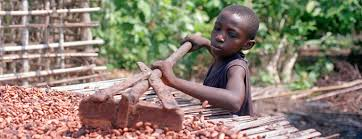
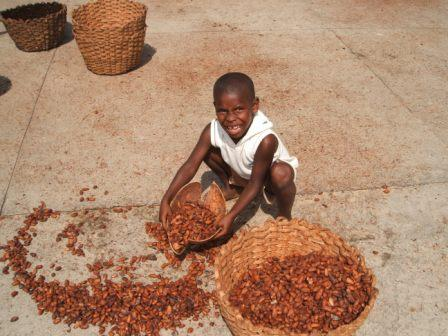
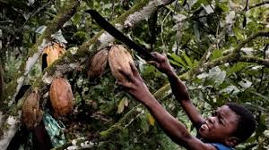
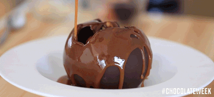
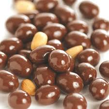
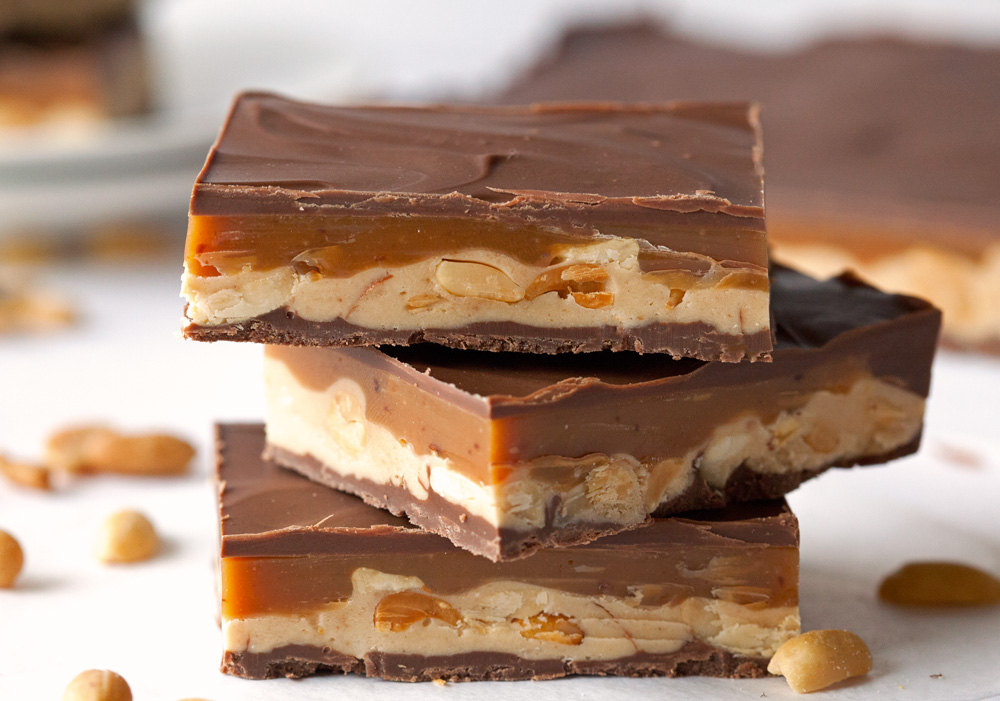
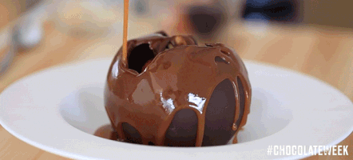
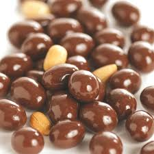
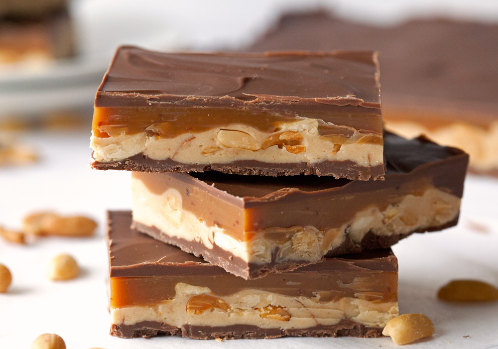

A 100 gram serving of milk chocolate supplies 540 calories. It is 59% carbohydrates (52% as sugar and 3% as dietary fiber), 30% fat and 8% protein (table). Approximately 65% of the fat in milk chocolate is saturated, composed mainly of palmitic acid and stearic acid, while the predominant unsaturated fat is oleic acid (table, see USDA reference for full report). In 100 gram amounts, milk chocolate is an excellent source (> 19% of the Daily Value, DV) of riboflavin, vitamin B12 and the dietary minerals, manganese, phosphorus and zinc (table). Chocolate is a good source (10-19% DV) of calcium, magnesium and iron.
Chocolate and cocoa are under preliminary research to determine if consumption affects the risk of certain cardiovascular diseases or cognitive abilities. Chocolate may be a factor for heartburn in some people because one of its constituents, theobromine, may affect the oesophageal sphincter muscle, hence permitting stomach acidic contents to enter into the oesophagus. Theobromine is also toxic to some animals that are unable to metabolize it. Excessive consumption of large quantities of any energy-rich food, such as chocolate, without a corresponding increase in activity to expend the associated calories, can increase the risk of weight gain and possibly obesity. Raw chocolate is high in cocoa butter, a fat which is removed during chocolate refining, then added back in varying proportions during the manufacturing process. Manufacturers may add other fats, sugars, and milk as well, all of which increase the caloric content of chocolate. Chocolate and cocoa contain moderate to high amounts of oxalate, which may increase risk for kidney stones. During cultivation and production, chocolate may absorb lead from the environment, but the total amounts typically eaten are less than the tolerable daily limit for lead consumption, according to a World Health Organization report from 2010. However, reports from 2014 indicate that "chocolate might be a significant source" of lead ingestion for children if consumption is high and “one 10 g cube of dark chocolate may contain as much as 20% of the daily lead oral limit.” A few studies have documented allergic reactions from chocolate in children.
Some manufacturers provide the percentage of chocolate in a finished chocolate confection as a label quoting percentage of “cocoa” or “cacao”. It should be noted that this refers to the combined percentage of both cocoa solids and cocoa butter in the bar, not just the percentage of cocoa solids. The Belgian AMBAO certification mark indicates that no non-cocoa vegetable fats have been used in making the chocolate. Chocolates that are organic or fair trade certified carry labels accordingly. In the United States, some large chocolate manufacturers lobbied the federal government to permit confections containing cheaper hydrogenated vegetable oil in place of cocoa butter to be sold as “chocolate”. In June 2007, as a response to consumer concern after the proposed change, the FDA reiterated “Cacao fat, as one of the signature characteristics of the product, will remain a principal component of standardized chocolate.”
The chocolate industry is a steadily growing, $50 billion-a-year worldwide business centered on the sale and consumption of chocolate. It is prevalent throughout most of the world. Europe accounts for 45% of the world's chocolate revenue and the US $20 billion. Big Chocolate is the grouping of major international chocolate companies in Europe and the U.S. The U.S. companies, such as Mars and Hershey's alone, generate $13 billion a year in chocolate sales and account for two-thirds of U.S. production. Despite the expanding reach of the chocolate industry internationally, cocoa farmers and labourers in the Ivory Coast are unaware of the uses of the beans. The high cost of chocolate in the Ivory Coast also means that it is inaccessible to the majority of the population, who are unaware of what it tastes like.
Chocolate manufacturers produce a range of products from chocolate bars to fudge. Large manufacturers of chocolate products include Cadbury (the world's largest confectionery manufacturer), Guylian, The Hershey Company, Lindt & Sprüngli, Mars, Incorporated, Milka, Neuhaus and Suchard. Guylian is best known for its chocolate sea shells; Cadbury for its Dairy Milk and Creme Egg. The Hershey Company, the largest chocolate manufacturer in North America, produces the Hershey Bar and Hershey's Kisses. Food conglomerates Nestlé SA and Kraft Foods both have chocolate brands. Nestlé acquired Rowntree's in 1988 and now markets chocolates under their own brand, including Smarties (a chocolate candy) and Kit Kat (a candy bar); Kraft Foods through its 1990 acquisition of Jacobs Suchard, now owns Milka and Suchard. In February 2010, Kraft also acquired British-based Cadbury. Fry's, Trebor Basset and the fair trade brand Green & Black's also belongs to the group.
Mars Incorporated is a large privately owned U.S. corporation, which produces:
The widespread use of children in cocoa production is controversial, not only for the concerns about child labour and exploitation, but also because up to 12,000 of the 200,000 children working in Côte d'Ivoire, the world's biggest producer of cocoa, may be victims of trafficking or slavery. Most attention on this subject has focused on West Africa, which collectively supplies 69 percent of the world's cocoa, and Côte d'Ivoire in particular, which supplies 35 percent of the world's cocoa. Thirty percent of children under age 15 in sub-Saharan Africa are child laborers, mostly in agricultural activities including cocoa farming. It is estimated that more than 1.8 million children in West Africa are involved in growing cocoa. Major chocolate producers, such as Nestlé, buy cocoa at commodities exchanges where Ivorian cocoa is mixed with other cocoa. In 2009, Salvation Army International Development (SAID) UK stated that 12,000 children have been trafficked on cocoa farms in the Ivory Coast of Africa, where half of the world's chocolate is made. SAID UK states that it is these child slaves who are likely to be working in "harsh and abusive" conditions for the production of chocolate, and an increasing number of health-food and anti-slavery organisations are now highlighting and campaigning against the use of trafficking in the chocolate industry.
  In the 2000s, some chocolate producers began to engage in fair trade initiatives, to address concerns about the marginalization of cocoa laborers in developing countries. Traditionally, Africa and other developing countries received low prices for their exported commodities such as cocoa, which caused poverty to abound. Fair trade seeks to establish a system of direct trade from developing countries to counteract this unfair system. One solution for fair labor practices is for farmers to become part of an Agricultural cooperative. Cooperatives pay farmers a fair price for their cocoa so farmers have enough money for food, clothes, and school fees. One of the main tenets of fair trade is that farmers receive a fair price, but this does not mean that the larger amount of money paid for fair trade cocoa goes directly to the farmers. The effectiveness of fair trade has been questioned.
Chocolate is sold in chocolate bars, which come in dark chocolate, milk chocolate and white chocolate varieties. Some bars that are mostly chocolate have other ingredients blended into the chocolate, such as nuts, raisins or crisped rice. Chocolate is used as an ingredient in a huge variety of candy bars, which typically contain various confectionary ingredients (e.g., nougat, wafers, caramel, nuts, etc.) which are coated in chocolate. Chocolate is used as a flavouring product in many desserts, such as chocolate cakes, chocolate brownies, chocolate mousse and chocolate chip cookies. Numerous types of candy and snacks contain chocolate, either as a filling (e.g., M&M's) or as a coating (e.g., chocolate-coated raisins or chocolate-coated peanuts). Some non-alcoholic beverages contain chocolate, such as chocolate milk, hot chocolate and chocolate milkshakes. Some alcoholic liqueurs are flavoured with chocolate, such as chocolate liqueur and creme de cacao. Chocolate is a popular flavour of ice cream and pudding, and chocolate sauce is a commonly added as a topping on ice cream sundaes.
 





Mars Bar Pic: Brand, B. Mars Bar - 2oz (58g). Retrieved September 26, 2016, from http://www.englishteastore.com/marsbar.html .
Milky Way Bar Pic: Holiday, (2012). Milky Way candy bars in the US vs. Europe. Retrieved September 26, 2016, from https://foodimentary.com/2012/03/11/milky-way-sizes/ .
Twix Bar Pic: Recipe Makeover: Homemade Twix Candy Bar. Retrieved September 26, 2016, from http://projectmomsanity.com/recipe-makeover-homemade-twix-candy-bar/ .
Snickers Bar Pic: 16 Supposedly Healthy Foods With More Sugar Than A Snickers Bar. Retrieved September 26, 2016, from https://www.buzzfeed.com/christinebyrne/supposedly-healthy-foods-with-more-sugar-than-a-snickers .
M&M Chocolate Pic: The history of the M&M. Retrieved September 26, 2016, from http://www.history.co.uk/shows/the-world-wars/articles/the-history-of-the-mm .
Child labour Pic: Child Labor and Slavery in the Chocolate Industry. Retrieved September 27, 2016, from http://www.foodispower.org/slavery-chocolate/ .
Child labour Pic: Children in cocoa production. Retrieved September 27, 2016, from https://en.wikipedia.org/wiki/Children_in_cocoa_production .
Child labour Pic: Children and chocolate: The sweet industry's bitter side. Retrieved September 27, 2016, from http://www.confectionerynews.com/Manufacturers/Children-and-chocolate-The-sweet-industry-s-bitter-side .
Chocolate Cake Pic: ChefSteps. Delicious Chocolate Cake. Retrieved September 27, 2016, from https://www.chefsteps.com/activities/ultimate-chocolate-cake .
Choco-Caramel Nougat Pic: Comments, B. K. (2013). Caramel Nougat Chocolate Bars. Retrieved September 27, 2016, from http://deliciouslyyum.com/caramel-nougat-chocolate-bars/ .
Chocolate ball Gif: Ice Cream GIF - Find & Share on GIPHY. Retrieved September 27, 2016, from https://giphy.com/gifs/ice-cream-Fw5DDIj8y2vMk .
Chocolate Peanuts Pic: Ghirardelli Milk Chocolate Covered Peanuts. Retrieved September 27, 2016, from http://ghirardelli.bayareacreativeservices.com/store/shop-products/gift/specialty/ghirardelli-milk-chocolate-covered-peanuts-1.html .
The entire contents of this page have been lifted from Wikipedia's page on chocolate.
To learn more about chocolate, go back to the previous page .
Return to the top of the page.